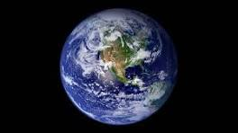
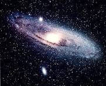

As estrelas
As estrelas são esferas de gás, que brilham no espaço, que geram luz e calor por meio de reações nucleares em seus núcleos, e parecem pequenas à noite porque estão muito longe da Terra.
Cada planeta do sistema solar
Mercúrio
O planeta mais próximo do Sol, é pequeno e quente, com temperaturas extremas.
Vênus
Semelhante em tamanho à Terra, tem nuvens grossas e muito calor, sendo o planeta mais quente.
Terra
Nosso lar, com água, ar e vida, e uma temperatura agradável para nós, seres humanos e também para os animais.
Marte
Conhecido como o "planeta vermelho", tem gelo e é um dos lugares mais estudados para possíveis missões humanas.
Júpiter
O maior planeta do sistema solar, com uma enorme mancha vermelha, que é uma tempestade gigante.
Saturno
Famoso pelos seus anéis brilhantes, é um dos planetas mais bonitos e grandes.
Urano
Um planeta azul esverdeado que gira de lado e tem anéis finos e tênues.
Netuno
O planeta mais distante, azul profundo e com ventos muito fortes.
Plutão (Exceção)
Plutão era considerado planeta do sistema solar até 2006. Antigamente era considerado um planeta, agora é um "planeta anão" porque não atende a todos os critérios para ser um planeta. É pequeno, com uma órbita inclinada e superfície congelada.
As galáxias
São enormes grupos de estrelas, planetas, gás e poeira que estão juntas no espaço. A nossa galáxia é a Via Láctea, que tem bilhões de estrelas, incluindo o Sol. Existem muitos tipos de galáxias, como espirais, elípticas e irregulares, e elas podem variar muito em tamanho e forma. Galáxias são como cidades gigantes no cosmos, cada uma com sua própria coleção de estrelas e planetas!
